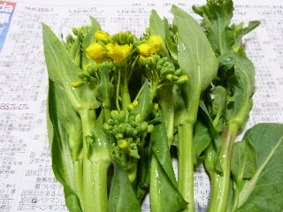
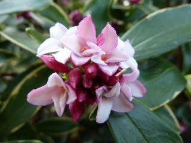
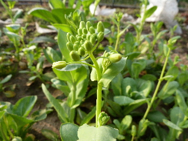
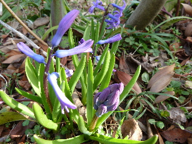
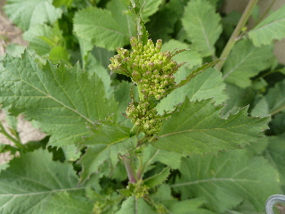
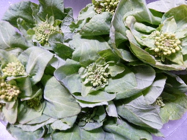
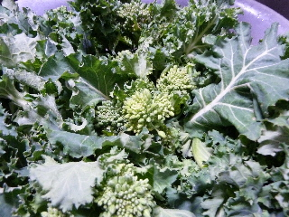
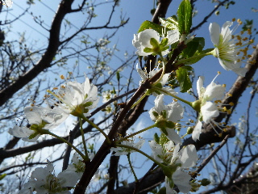
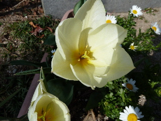

小松菜の花は美味しいな。
2013/03/03
小松菜の菜花が採れました。

湯がいて食べると美味しいんですよね。
小松菜にかぎったことじゃないですが、春の菜花は甘くて美味しいので好きです。
2013/03/03
小松菜の菜花が採れました。

湯がいて食べると美味しいんですよね。
小松菜にかぎったことじゃないですが、春の菜花は甘くて美味しいので好きです。
2013/03/09
ジンチョウゲの花が咲き始めました。

風下はとってもいい匂いがします。
春ですね。
あちこちで咲いてれば、そこれじゅうがいい匂いになるんでしょうね。
2013/03/09
何かは忘れちゃいましたが、中国野菜の花が出てきました。

菜花と同じ感じですね。
茹でて美味しくいただきました。
2013/03/10
小さいヒヤシンスが木の下で咲いてました。

花が大きいものをよく見ますが、小さいものも可愛くていいですね。
2013/03/17
東京ではソメイヨシノが開花のようですが、私の家では杏子の花が開花です。

まだ少しですが、蕾もすぐに咲きそうです。
ピンク色が綺麗ですね。
2013/03/17
カラシ菜が大きくなったので収穫しました。

苦いですね。
でも今の時期は茎が柔らかいので、ちょっと食べやすかった。
2013/03/17
白菜って食べきれないで、春になっちゃうと花が出ちゃうんですよねー。

これはこれで、菜の花としていただきます。
冬の間ずーっと白菜って食べ続けていたので、ちょっと味が変わってうれしいです。
2013/03/17
島根の野菜、あすっこですね。

今年初収獲しました。
久しぶりに見ると、なんか違和感がありました。
去年はどうやって食べてたっけ？
なんかもう忘れちゃった。
2013/03/23
小さい花が沢山咲いてます。

小さすぎるし、葉っぱも出てるのであんまり目立たないです。
花がいっぱいだけど、何個が実になるのかなー？
2013/03/23
もうチューリップの季節ですね。
白のシンプルなタイプなので、咲くのが早いです。

チューリップまつりとかは今年は何日でしょうね？
桜が散りだすとチューリップのイメージがあるので、桜が今年は早いのでチューリップも早いかな？
まつりの日程がちょっと気になります。
2013/03/31
桃はちょっと花が大きくて見栄えがいいです。

柔らかそうな花びらがかわいいですね。
色も綺麗です。
これが沢山の実になると、なおいいですね。
過去の日記
畑仕事じゃないよ。